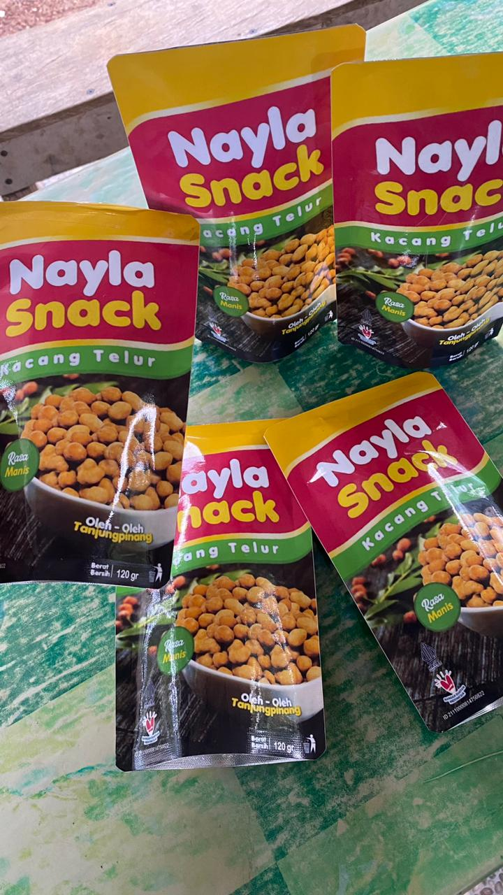

Handmade
Dibuat dengan tangan menggunakan resep tradisional turun-temurun yang terjaga kualitas dan rasanya.
Camilan Khas Tanjungpinang — Renyah, Lezat, Bikin Ketagihan!

Nayla Snack adalah usaha makanan ringan khas Tanjungpinang yang menyajikan berbagai camilan lezat dengan harga terjangkau dan kualitas terbaik. Didirikan sejak 2017 oleh Bu Herna, Nayla Snack menjadi pilihan oleh-oleh favorit dari Tanjungpinang, Kepri.
Menjadi merek camilan unggulan khas Tanjungpinang yang dikenal luas dan menjadi pilihan utama masyarakat sebagai oleh-oleh berkualitas.
Memproduksi snack berkualitas dengan bahan pilihan, menjaga cita rasa autentik, dan terus berinovasi untuk memberikan kepuasan pelanggan.
Dibuat dengan tangan menggunakan resep tradisional turun-temurun yang terjaga kualitas dan rasanya.
Diproduksi setiap hari untuk memastikan kesegaran dan kerenyahan terbaik sampai di tangan pelanggan.
Camilan berkualitas premium dengan harga yang ramah di kantong untuk semua kalangan.
"Kacang Telurnya gurih dan renyah banget! Sudah jadi camilan wajib di rumah setiap minggu. Highly recommended!"
– Siti Rahma
Tanjungpinang"Nayla Stick-nya enak banget! Beli buat oleh-oleh ke Jakarta, semua pada suka. Harganya juga bersahabat banget."
– Budi Santoso
Jakarta"Snack-nya selalu fresh! Packingnya rapi dan higienis. Cocok banget buat oleh-oleh dari Tanjungpinang!"
– Dewi Lestari
BatamCamilan lezat khas Tanjungpinang — renyah, gurih, dan bikin ketagihan!
Kami siap melayani pesanan dan pertanyaan kamu!
Isi form di bawah lalu klik kirim — pesan kamu akan langsung masuk ke WhatsApp kami